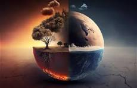

Cambio climático
Un problema grave actual
Cambio climático
El cambio climático es la alteración a largo plazo del clima de la Tierra, incluyendo el aumento de temperaturas, cambios en los patrones de lluvias y fenómenos extremos como huracanes o sequías. Esto ocurre principalmente por la actividad humana, como la quema de combustibles fósiles, la deforestación y la contaminación, que aumentan los gases de efecto invernadero en la atmósfera, atrapando más calor. Sus impactos incluyen el derretimiento de glaciares, aumento del nivel del mar y pérdida de biodiversidad, afectando tanto a los ecosistemas como a la vida humana. 🌍
Gases de Efecto invernadero
Dioxido de carbono (CO2)
Es el principal GEI, responsable de aproximadamente tres cuartas partes de las emisiones. Se produce de forma natural por los animales y la descomposición de la biomasa, pero también por la quema de combustibles fósiles y reacciones químicas
Metano (CH4)
Es el segundo gas que más contribuye al calentamiento global, después del dióxido de carbono (CO2). El metano es más de 80 veces más dañino que el CO2 durante los primeros 20 años después de su emisión. Se produce de forma natural en humedales, pantanos, lagos, sedimentos marinos y en los intestinos de los animales rumiantes. También se produce por actividades humanas como la agricultura, la ganadería, la explotación de combustibles fósiles y la descomposición de residuos.
Oxido nitroso (N20)
El óxido de nitrógeno es un gas que contribuye al efecto invernadero y puede permanecer en la atmósfera hasta 100 años. Se estima que este gas es responsable del 5% del efecto invernadero artificial. También ataca la capa de ozono.
Gases Flurorados
Los gases fluorados son compuestos químicos artificiales que contienen flúor y se utilizan en diversas aplicaciones industriales. Son gases de efecto invernadero que contribuyen al cambio climático y al agotamiento de la capa de ozono. Algunos ejemplos de gases fluorados son: Hidrofluorocarbonos (HFC), Perfluorocarbonos (PFC), Hexafluoruro de azufre (SF6), Clorofluorocarbonos (CFC), Hidroclorofluorocarbonos (HCFC), Hidrofluoroolefinas (HFO).